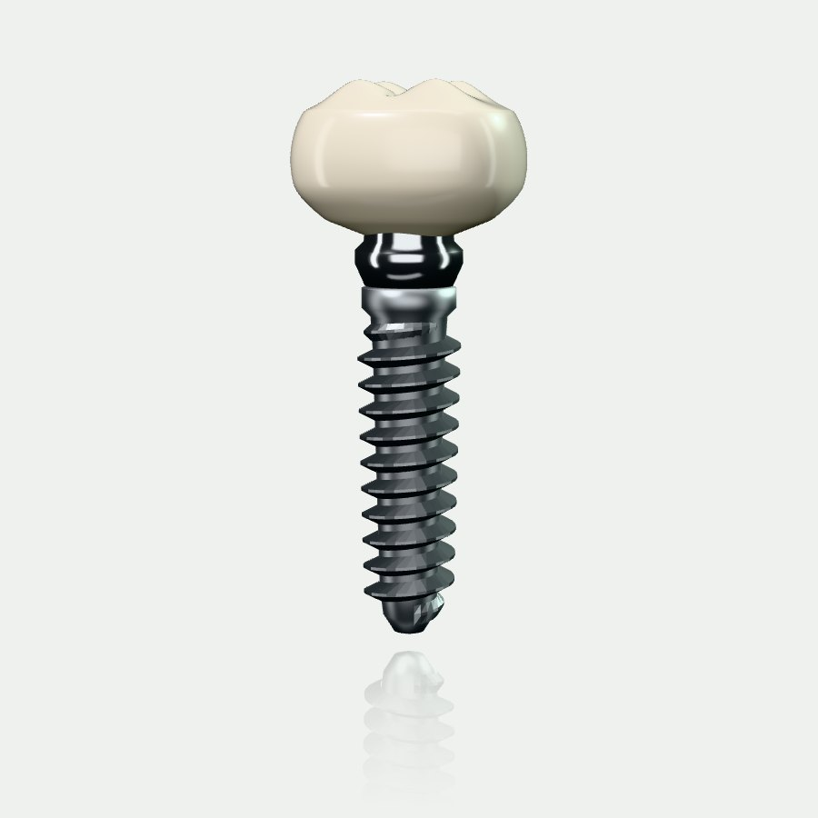
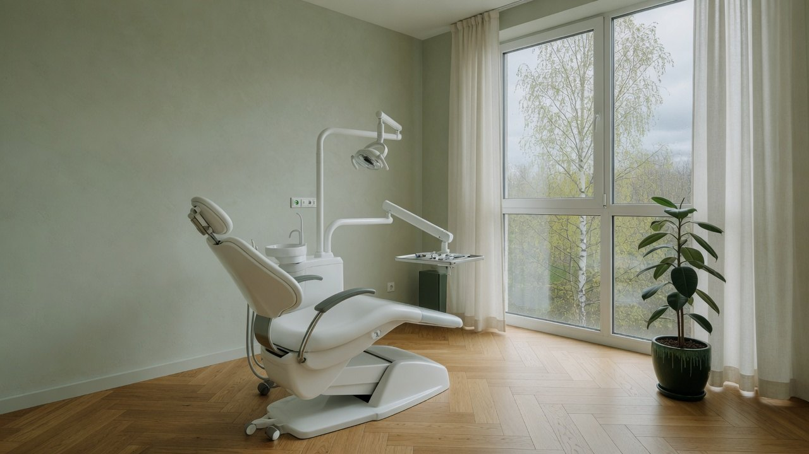
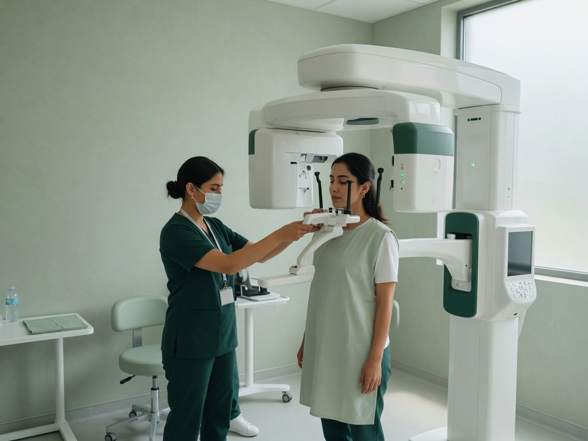
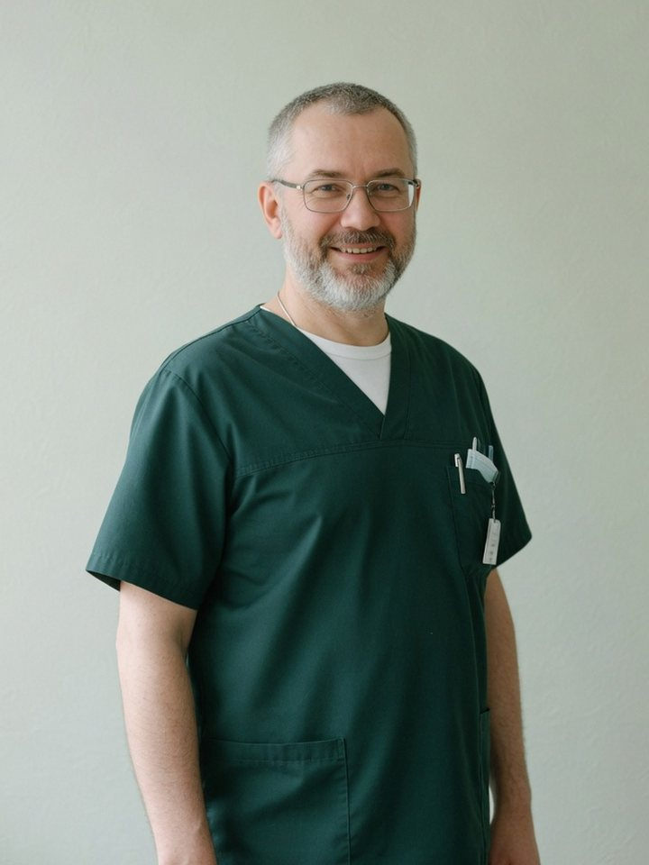
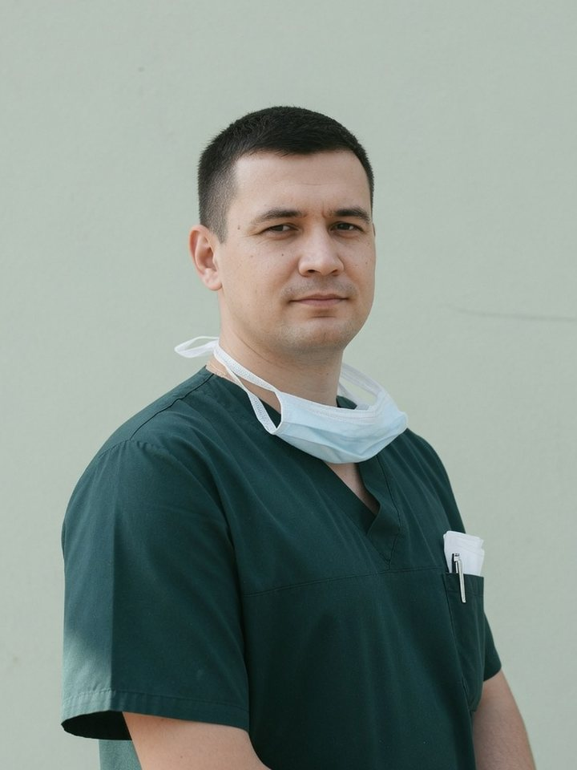
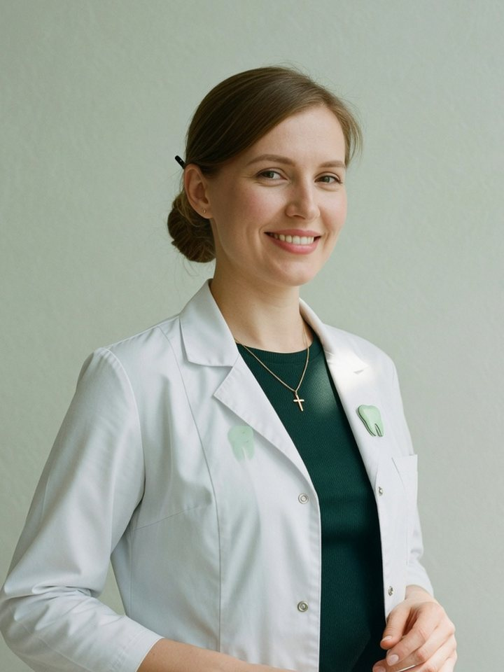

гарантия на имплант
10лет
Письменная, с номером импланта и партии. Если он не прижился, ставим новый бесплатно.
Стоматология «Эмаль» · Новосибирск
Имплант под ключ за три визита. Титан из Швейцарии, коронка из циркония и цена на бумаге до того, как вы сядете в кресло.

Сначала разговор и снимок. Потом план с ценой, который вы унесёте домой и обдумаете. И только потом кресло. Мы не начинаем лечение в день знакомства и не меняем цену посреди работы.
Устройство
Диоксид циркония, фрезеруем в своей лаборатории по снимку. Прочнее керамики на металле, на свету не даёт серой каймы у десны.
цирконий · 0,7 мм у краяДержит коронку на абатменте. Если коронку когда-нибудь придётся снять, её снимут, не распиливая.
титан с покрытием · 35 Н·смПереходник от импланта к коронке. Плоская грань не даёт коронке провернуться, гладкая шейка — дом для десны.
титан Grade 5 · по оттискуЗаменяет корень. Резьба врезается в кость сама, за три месяца кость обрастает её и держит крепче родного корня.
Straumann, Швейцария · 4,1 × 10 ммСобирается за три визита. Между вторым и третьим вы живёте как обычно.
гарантия на имплант
10лет
Письменная, с номером импланта и партии. Если он не прижился, ставим новый бесплатно.
визита
3
План, имплант, коронка. Без «заодно» и «давайте ещё посмотрим».
снимок КТ
5мин
Свой томограф в соседнем кабинете. Ехать никуда не нужно.
план и снимок при лечении
0₽
План с ценой отдаём на руки. Обдумайте дома.
Цвет
Шестнадцать оттенков шкалы VITA. Ортопед сравнивает с соседними зубами при дневном свете, а не под лампой кресла.
A2 Тёплый светлый, самый частый оттенок у взрослых.

Четыре кресла, окна во двор с берёзами
и никакой очереди в коридоре.
Как это будет
Каждый этап видно заранее: сколько займёт и сколько стоит. Как статус посылки, только про зуб.

Смотрим кость на снимке, показываем вам на экране, где встанет имплант. План с ценой отдаём на руки.
0 ₽ при леченииПод местным наркозом. Больно не будет: сначала гель, потом укол тонкой иглой, его вы почти не почувствуете.
имплант и операцияВы живёте как обычно. Через неделю короткий осмотр, швы снимать не нужно.
осмотр бесплатноПримеряем, сверяем цвет у окна, закрепляем винтом. Гарантийный паспорт с номером импланта — вам.
итого от 54 000 ₽Цены
В цене работа врача, наркоз, материалы и контрольный осмотр. Дороже, чем в плане, не будет.
Врачи

Объясняет каждый шаг до того, как взять инструмент.

Ставит импланты с 2004 года и до сих пор рисует план от руки.

Подбирает цвет коронки только при дневном свете.

Ведёт пациентов на элайнерах и отвечает в мессенджере даже в субботу.
Боялась идти восемь лет. Мне сначала просто всё показали на снимке и назвали цену. Имплант ставили сорок минут, я ничего не почувствовала.
План дали на бумаге, и он не поменялся. Заплатил ровно столько, сколько было написано в первый день.
Коронку подбирали у окна минут десять. Теперь сама не помню, какой зуб был не мой.
Запись
Открыто до 21:00
Что нужно
День
Время